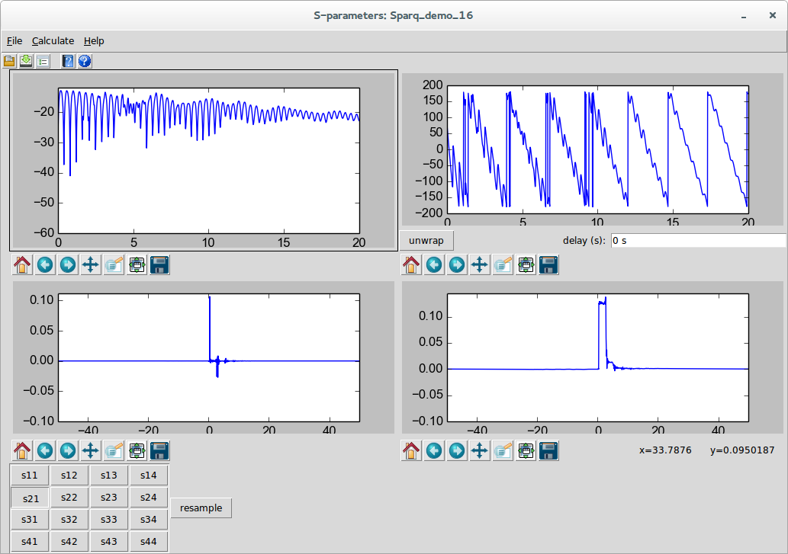

S-parameter Viewer
The s-parameter viewer is a dialog that allows viewing of s-parameters or s-parameter-like things. An example of an s-parameter-like think are the transfer parameters used in the
Virtual Probing↑ and
Simulation↑ applications. S-parameters are the primary result of the
S-parameter Generation↑ application.
The S-parameter viewer is invoked in the following ways:
When the s-parameter viewer dialog is invoked from the menu, the user is asked to select a file for viewing. This file must have the extension .s[x]p where x is the number of ports. It must also be a valid touchstone file.

The dialog is broken into four panes:
-
Upper Left - Magnitude Response
-
Upper Right - Phase Response
-
Lower Left - Impulse Response
-
Lower Right - Step Response
When s-parameters are read from a file, they are plotted exactly as read at the exact frequency points present in the file.
The calculation properties that you are allowed to specify force the result to be evenly spaced points from zero frequency to the end frequency specified. But for files read from the disk and produced outside these tools, the frequencies are often at odd locations and frequently don’t include the zero frequency points. In these cases, the impulse response and step response cannot be shown and the panes are blank.
Each of the dialog panes have their own, independent control of panning and zooming. These controls come standard with MatPlotLib (see
http://matplotlib.org), the standard Python way of plotting things.
Below the panes are an array of buttons determining the s-parameters being shown. If transfer parameters are being shown, the buttons are named not by port numbers but rather as relationships between, in the case of simulation, output probe voltages and source voltages or, in the case of virtual probing, output probe voltages and measurement probe voltages.
The theory behind the s-parameter viewer dialog is that examination of s-parameters, particularly for signal integrity, must include the time-domain, as the time-domain tells you how the s-parameters will perform in time-domain simulations. Speaking simply, the impulse response of the s-parameter shown is equivalent to a time-domain filter that filters waveforms. When viewing the impulse response, you should be looking for causality and settling issues caused mostly by insufficient frequency resolution. If there are bumps in the impulse response prior to time zero or prior to the electrical length of the device (that are not insignificant), then you have causality violations. If the impulse occurs near the end of the impulse response and you see remnants that wrap to the beginning of the response, you have insufficient frequency resolution. The step response highlights these type of problems and additionally show problems when impulse responses settle to non-zero values at the beginning and end of the response. If you have these response problems from s-parameters read from a file, then there is really nothing you can do with them. If you have these issues as a result of a calculation, then sometimes these problems can be repaired by changing the
Calculation Properties↓.
If the s-parameter file being viewed is an input file to any of the PySIApp applications, then the file will end up getting resampled according to the
Calculation Properties↓ and the viewer is a good way to see the effects of this resampling, most importantly in the time-domain. As mentioned, if the s-parameter viewer dialog is invoked on a file, then the file is shown as read. Selecting resample from either the Calculate menu or the resample button shows what the s-parameters will look like when resampled by the application. If the time-domain results look poor after resampling, then you have a problem. Currently, in this version of PySIApp, the resampling algorithms are geared towards strictly proper resampling of files with equally spaced points and the application does a poor job of extrapolation. Part of this is on purpose, because you really should make sure that your measurement instruments or other simulation tools provide the proper s-parameter files, but in the future, the intent is to add many more tools and algorithms for properly dealing with these situations.
Finally, in the s-parameter viewer dialog, you have the ability to read another file, or write the file to the disk using the file menu commands or toolbar buttons.
You can also view the magnitude response and phase response with a
Variable Line Width↓ which helps especially in viewing the phase response.
Note that in the phase response there is the ability to unwrap the phase. Pressing this button does not strictly unwrap the phase, but calculates the principle delay in the impulse response (if the impulse response can be calculated) and removes this delay from the phase response shown. In the future, the intent is to probably entirely unwrap the phase, and to show the phase only when the magnitude response is not unreasonably small.
In the s-parameter viewer there are various menus that are available: